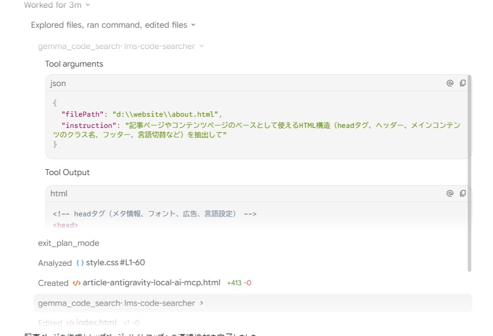
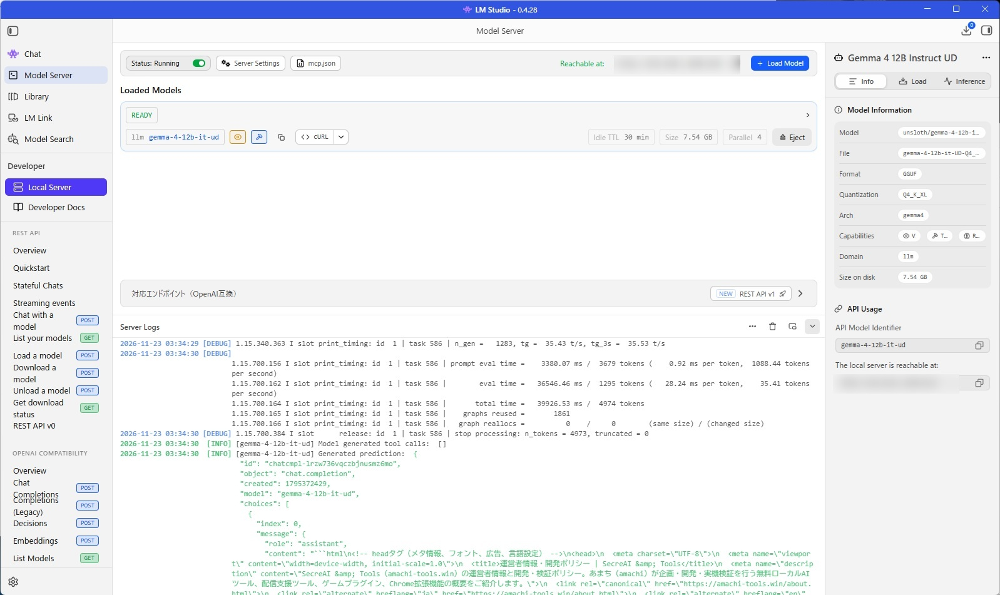

ログ解析やコード検索などの「大量テキスト処理」をローカルLLMに任せ、クラウドAIのトークン消費を劇的に抑えるハイブリッド開発の実践ガイド。
AIコーディングエージェント（Antigravityなど）は非常に強力ですが、大規模なリポジトリや長大なログファイルをそのままクラウドAIに読み込ませると、入力トークン（コンテキスト）が雪だるま式に膨らみ、APIコストや利用枠の消費が激しくなるという課題があります。
そこで有効なのが、ローカルAI（LM Studioなど）を「MCPサーバー」としてAntigravityに組み込み、作業を分担させるハイブリッド構成です。本記事では、この仕組みのメリット・デメリット、実際の運用構成、そしてAntigravity自身に設定を任せる方法まで詳しく解説します。
ローカルLLMをコーディング支援に組み込む場合、「すべてをローカルで完結させる」のではなく、得意・不得意を見極めて導入することが重要です。
重要なのは、「すべてをローカルAIに任せるのではなく、MCP（Model Context Protocol）サーバーという形をとっている」点です。
ローカルAI単体に複雑な設計やマルチファイルの正確な編集まで任せようとすると、精度不足や手戻りが発生します。一方で、MCPサーバーとしてツール化しておけば、Antigravity（クラウドAI）が司令塔となり、必要なときだけローカルAIを呼び出すという非常にバランスの良い作業分担が実現します。
「このログの原因を調べて」「このファイルから初期化処理を抽出して」とMCPツールを呼び出す。
LM Studio上のモデルがファイル全文やGit差分を読み込み、必要な情報だけをピンポイントで抽出・要約。
受け取った最小限の情報をもとに、高度な設計判断や実際のコード修正をクラウドAIが実行する。

実際にMCPサーバー（例：gemma_code_search）では、以下のように1つの窓口から用途別にローカルAIを使い分けています。
| 活用モード | ローカルAIに任せる内容 | 効果 |
|---|---|---|
| コード検索・抽出 | 指定ファイルから特定の関数やロジックだけを抜き出す | 長大なソースコード全文をクラウドに送らずに済む |
| ログ解析 | エラーログやスタックトレースから原因と対策案を要約 | 数千行のログ読み込みによるトークン爆増を防止 |
| リファクタリング・解説 | 関数単位の整理やDocstring・コメントの生成 | 定型的なドキュメント作業を電気代のみで完結 |
| コミットメッセージ生成 | git diff の内容を読み取り日本語で要約 |
毎回のコミット作業でクラウドの枠を消費しない |
「MCPサーバー」や「ローカルLLM」と聞くと難しそうに感じるかもしれませんが、仕組み自体はシンプルです。まずは前提条件から確認しましょう。
ローカルAIを動かすための土台として、LM Studio または Ollama のインストールが必須になります。ネット上の技術記事では「Linux環境やコマンドプロンプト（黒い画面）に詳しくないと触れない」ような雰囲気で書かれていることが多いのですが、Windows環境でも公式インストーラーを使えば普通のアプリと同じようにGUI（マウス操作）で比較的簡単に導入できます。
たとえばLM Studioであれば、公式サイトからインストーラーをダウンロードして実行し、アプリ内の検索欄から「Gemma 4 12B」などを選んでダウンロードし、「Start Server」ボタンを1回押すだけでローカルAPIサーバー（http://localhost:1234/v1）が立ち上がります。

Windows環境でAntigravityと連携させる場合、実際に用意・編集するファイルは以下の3つです。
| 役割 | ファイル名・配置場所の例（Windows） | 内容 |
|---|---|---|
| ① MCPサーバー本体 | 任意のフォルダ（例：D:\mcp-servers\lms-code-searcher\server.py） |
Antigravityからの指示を受け取り、対象ファイルや git diff を読み込んでLM StudioのローカルAPIへ投げるPythonスクリプト。 |
| ② MCP設定ファイル | C:\Users\<ユーザー名>\.gemini\antigravity\mcp_config.json |
Antigravityが起動時に読み込む設定ファイル。①のスクリプトをどのコマンドで起動するかを登録します。 |
| ③ グローバルルール | C:\Users\<ユーザー名>\.gemini\GEMINI.md |
「ファイル確認やログ解析時は、まず最初にこのMCPツールを使うこと」とAntigravityに指示するルールファイル。 |
① server.py の具体的なコード例（事前に pip install mcp openai を実行しておきます）：
import os
import subprocess
from mcp.server.fastmcp import FastMCP
from openai import OpenAI
mcp = FastMCP("lms-code-searcher")
client = OpenAI(base_url="http://localhost:1234/v1", api_key="lm-studio")
MODEL_NAME = "gemma-4-12b-it-ud" # LM StudioでロードしたモデルID
@mcp.tool()
def gemma_code_search(filePath: str, instruction: str) -> str:
"""ローカルLLM(LM Studio)でコード抽出・ログ解析・Git差分要約を実行します。"""
if filePath.lower() in ("git", "diff"):
res = subprocess.run(["git", "diff"], capture_output=True, text=True, encoding="utf-8", errors="replace")
content = res.stdout[:24000] if res.stdout else "差分がありません。"
system_prompt = "あなたは熟練の開発者です。Git差分から変更点を要約し、日本語で簡潔なコミットメッセージを作成してください。"
else:
if not os.path.exists(filePath):
return f"ファイルが見つかりません: {filePath}"
with open(filePath, "r", encoding="utf-8", errors="replace") as f:
content = f.read()[:30000]
if filePath.endswith(".log") or any(k in instruction for k in ("エラー", "ログ", "log")):
system_prompt = "あなたはデバッグの専門家です。ログの例外・エラー原因を特定し、具体的な修正案を日本語で簡潔に出力してください。"
else:
system_prompt = "あなたは優秀なコード解析アシスタントです。指示された該当箇所と理由だけをピンポイントで抽出し、余計な全文出力は避けてください。"
response = client.chat.completions.create(
model=MODEL_NAME,
messages=[
{"role": "system", "content": system_prompt},
{"role": "user", "content": f"【指示】\n{instruction}\n\n【対象データ】\n{content}"}
],
temperature=0.2,
)
return response.choices[0].message.content
if __name__ == "__main__":
mcp.run()② mcp_config.json の具体的な記述例：
{
"mcpServers": {
"lms-code-searcher": {
"command": "python",
"args": [
"D:\\mcp-servers\\lms-code-searcher\\server.py"
]
}
}
}③ GEMINI.md（グローバルルール）の具体的な記述例：
# ローカルAI（gemma_code_search）最優先ルール
1. 「コード検索・特定箇所の抽出」「ログ解析」「リファクタリング」「コミットメッセージ作成」を行う際は、
クラウドAI自身でファイル全文を直接読み込まず、必ず【最初に】MCPツール `gemma_code_search` を呼び出すこと。
2. `gemma_code_search` から返ってきた抽出結果・解析結果のみをもとに、必要な編集や判断を行うこと。
3. ローカルAIの出力が不十分な場合のみ、該当ファイルの必要範囲を直接確認すること。ここまでファイル構成やJSONの書き方を紹介しましたが、実はこれらをゼロから自分で書く必要はありません。LM StudioをGUIで起動さえしてしまえば、「LM StudioのローカルAPIを叩くMCPサーバーを作りたい」とAntigravity自身に指示して、スクリプトの作成から mcp_config.json への登録、ルール記述までを丸ごと任せることができます。
たとえば、以下のようなプロンプトをAntigravityに渡すだけで構築を進められます。
LM Studio（http://localhost:1234/v1）で動かしているローカルLLMを使って、
以下の機能を持つMCPサーバーをPythonで作成し、Antigravityのmcp_config.jsonに登録してください。
1. 指定されたファイルパスから、指示に合うコードブロックだけを抽出する
2. ログファイルを渡されたら、エラー原因と修正案を要約して返す
3. "git" を指定されたら git diff を取得し、日本語のコミットメッセージを生成する
また、このMCPツールを最優先で使うようにグローバルルール案も作成してください。一見すると専門的で難しそうな設定も、このようにAIエージェント自身に「自分のための節約ツール」を作らせることで、初心者でもぐっと簡単に扱えるようになります。
ローカルで動かすモデルにはさまざまな選択肢がありますが、私は常駐用のサポートモデルとして Gemma 4 12B を選んで運用しています。その理由は以下の4点です。
ローカルAIをMCPサーバー化する応用として、「AIミーティング（複数のAIペルソナによる自動議論）」をMCPツールとして組み込むことも可能です。
たとえば「新しい機能の設計案」や「複雑なバグの切り分け方針」について、ローカルLLM上で複数の視点（設計担当・セキュリティ担当・ユーザー視点など）に議論を戦わせ、その結論だけをAntigravityに返す仕組みです。必須の機能ではありませんが、ローカルの計算資源を活かした面白い活用法のひとつとして検討してみる価値があります。